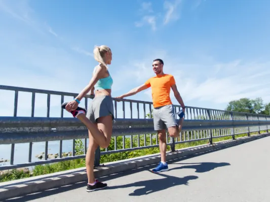

Bedrijvengids
Sportverenigingen in Nijmegen
Elke zaterdag op het veld, een avond in de klimhal of roeien op de Waal: Nijmegen heeft sportverenigingen voor bijna elke sport, voor jeugd en volwassenen.
Op deze pagina vind je alle 68 verenigingen in Nijmegen, met openingstijden, een eigen pagina en een kaart. Filter hieronder op wat jij belangrijk vindt, zoals voetbal, tennis of klimmen.
Uitgelicht

VoorbeeldJouw verenigingUitgelicht staat bovenaan, met foto en actieknopWord nu lid: eerste maand gratisjeugdrecreantenBekijk hoe het werkt Nog 3 plekken vrijZet jouw sportvereniging hier bovenaan, boven 68 andere verenigingen. Met foto's, je actie, een eigen knop en je banner bij onze blogs over sporten in Nijmegen.Het eerste jaar € 99Waar zoek je naar?
Alle verenigingen in Nijmegen
Op de kaart
Heb je een sportvereniging in Nijmegen?
Elke sportvereniging staat gratis in onze gids. Wil je opvallen tussen 68 verenigingen? Kies dan voor Uitgelicht of Partner.
| Gratis | Uitgelicht € 149 per jaar, eerste jaar € 99 | Partner € 449 per jaar | |
|---|---|---|---|
| Eigen pagina met adres, kaart en openingstijden | ✓ | ✓ | ✓ |
| Tekst door onze redactie | kort | uitgebreid | uitgebreid |
| Foto's op je eigen pagina | 1 | tot 10 | tot 10 |
| Bovenaan deze pagina, met foto en label Uitgelicht | – | ✓ | ✓ |
| Actie en eigen knop (lid worden, trainingstijden, route) | – | ✓ | ✓ |
| Uitgelicht onder onze blogs over sporten in Nijmegen | – | ✓ | ✓ |
| Banner in de partnerbalk | – | bij blogs over sporten in Nijmegen | op de hele site |
| Artikel over je bedrijf en een plek in de nieuwsbrief | – | – | ✓ |
| Overzicht van weergaven en kliks | jaarlijks | jaarlijks | elk kwartaal |
Kies Uitgelicht Alle mogelijkheden · Staat je sportvereniging er al? Klik op je pagina op Dit is mijn bedrijf.
Lees ook
Veelgestelde vragen
Hoe vind ik een sportclub in mijn wijk?
Bekijk de kaart en filter op je sport, zoals voetbal, hockey of tennis.
Kan ik eerst meetrainen?
Bij veel verenigingen kun je een paar keer gratis meedoen; vraag het na bij de club.
Gegevens: onze eigen gids, aangevuld met © OpenStreetMap-bijdragers en Overture Maps.